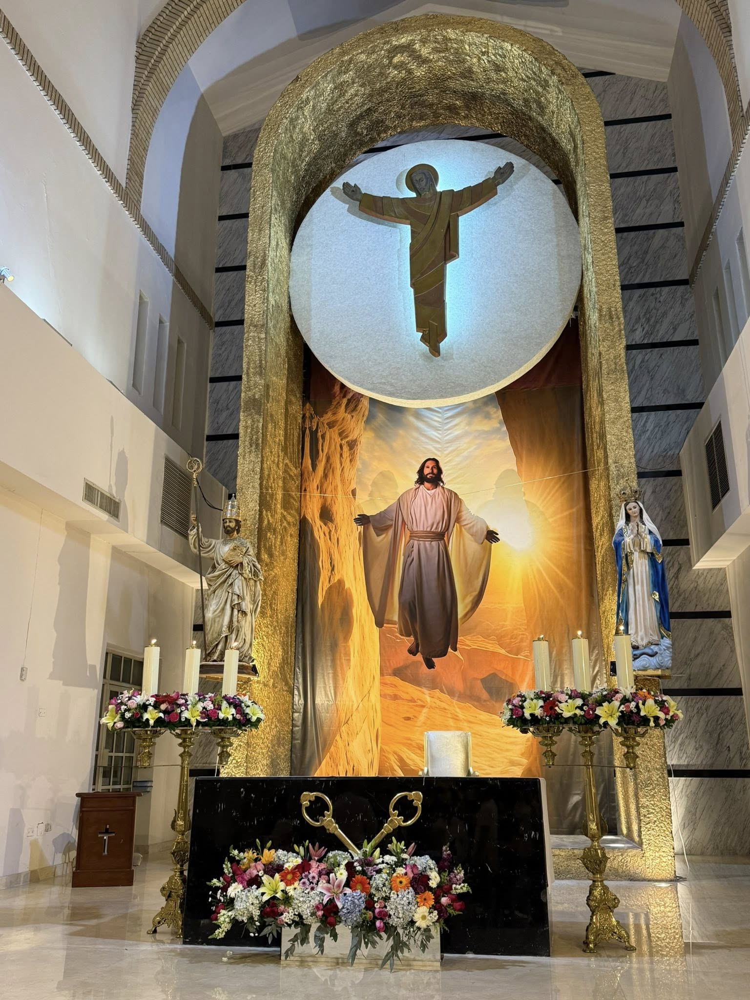
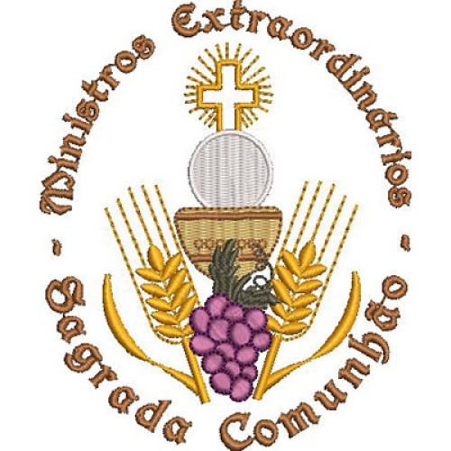
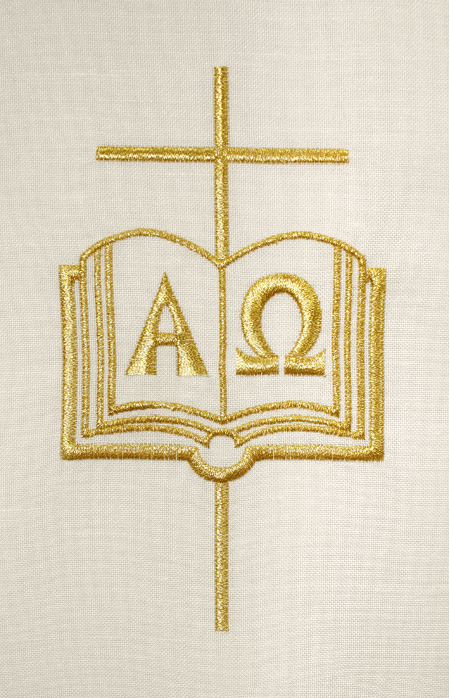

Directrices por Ministerio
Selecciona tu área para ver los protocolos y liturgias del Domingo de Pascua.

Misal y Lecturas 📖
Textos íntegros de la Misa, incluyendo todas las lecturas del día y la Secuencia Pascual obligatoria.

Ministros (MEC) 🍷
Logística festiva para la distribución de la Comunión ante la inmensa afluencia dominical.
Monaguillos 🕯️
Asistencia en el rito de aspersión, custodia del Cirio Pascual y campanillas para el Gloria.

Lectores 📖
Proclamación festiva de la Palabra de vida y entonación de la poesía de la Secuencia Pascual.
Coro y Música 🎶
El triunfo del Aleluya, el Gloria y los cantos desbordantes de alegría por la Resurrección.

Ujieres y Hospitalidad 🤝
Acogida alegre a la comunidad y mantenimiento del orden durante estas misas tan concurridas.
¡Gracias por su entrega!
Un agradecimiento muy especial y profundo de parte del Padre Arturo Flores y el Padre Alan Sánchez a todos los Sacristanes y Voluntarios. Su trabajo a menudo invisible, su entrega incansable y su inmenso amor por la liturgia hicieron posible que nuestra comunidad viviera la Semana Santa con un orden y dignidad impecables.
¡Que el Cristo Resucitado bendiga a sus familias!